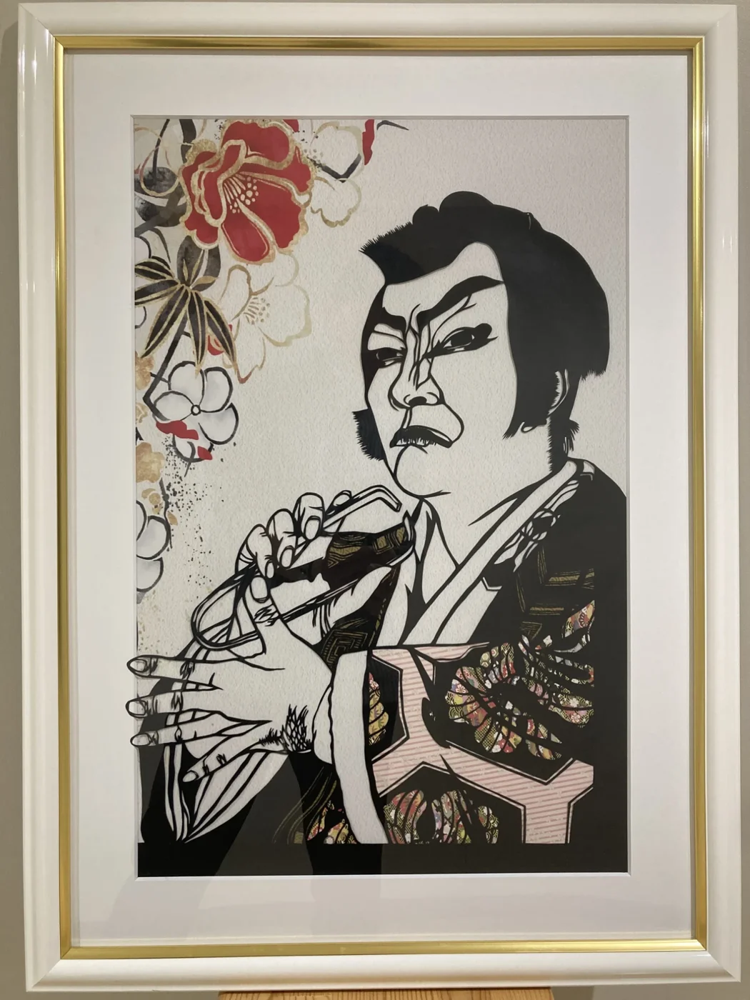

トップ / HOBBIES
手を動かし、声を出し、体を動かす。切り絵・詩吟・少林寺拳法・カリンバ・笑い文字。
ARTWORK

歌舞伎十八番のひとつ「毛抜」を題材にした切り絵作品。一枚の黒い紙から、隈取の表情、指先、着物のしわまでを切り出し、背景には花を描いた和紙を、着物の部分には千代紙を重ねて色を添えています。
HOBBIES
やさしい音色に癒やされています
文字で笑顔を届けます
テーマ一覧へ戻る